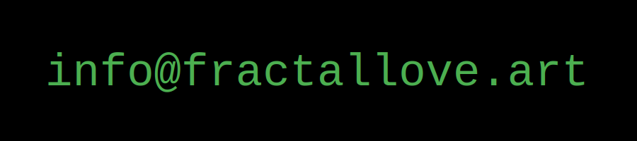

*
FRACTAL LOVE is an immersive, interactive light art installation driven by video-feedback. A camera observes its own output, creating a feedback loop that generates beautiful, dynamic, geometric patterns.
FRACTAL LOVE is highly interactive. Visitors can step into the stream of light between camera and projection, merging their bodies into a psychedelic shadow play.
A 3-axis robot navigates the fractal space by moving the camera. The patterns appearing in FRACTAL LOVE are not pre-programmed or algorithmically created; they emerge entirely from the feedback loop, shaped by camera angle, ambient light and participation.
*

*